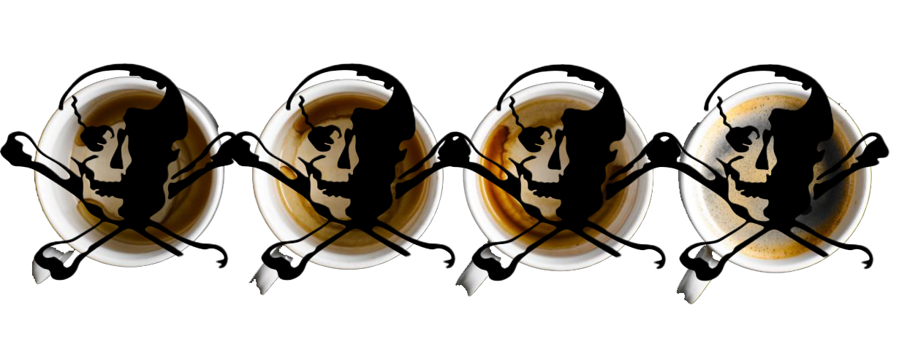

Coffee
Coffee
More and more I see that coffee is depicted as this health powerhouse. This section is not totally about enlightening people on the realities of coffee. What this section is about is removing coffee as an essential aspect of daily life. We have been misled by coffee gurus saying that coffee helps you live longer or that intellectual movements in history happened because of coffee. That might be a little true, but there are a lot of evil things that contributed to technically “positive” movements in history. So many truths about coffee are hidden. They won’t tell you the whole story. It is a health trap that could cost your life.
The simple fact is that people who drink coffee tend to make other bad choices like drinking alcohol and smoking cigarettes. They are more likely to do drugs and other horrible things. If we look at the data, we see that caffeine isn’t the reason coffee is bad. The reason it is bad is because it is a source of acrylamide. This is why Starbucks has to put up warning signs that acrylamide is associated with cancer. Also, coffee contains fluoride which is associated with many bad things.

Certain diseases are stopped by coffee. That is true. There are many contradictions within coffee because while it does stop disease, it also causes other diseases. Coffee contains many telomeres which are biologically linked to aging. From my research, the property that does this is chlorogenic acid. Other forms of caffeine contain this good acid, so coffee can be avoided if caffeine is why you drink coffee.
We can’t say for sure because we just don’t have enough information yet. There aren’t enough studies to say that coffee is the explicit reason why coffee drinkers are dying sooner. Someone on the standard American diet filled with unhealthy foods and a lack of antioxidants might actually consume coffee and lengthen their life because coffee provides antioxidants, they are lacking in. And this is most people, but for the people who aren’t in this situation like anyone who knows anything about health, then coffee is most certainly a negative.